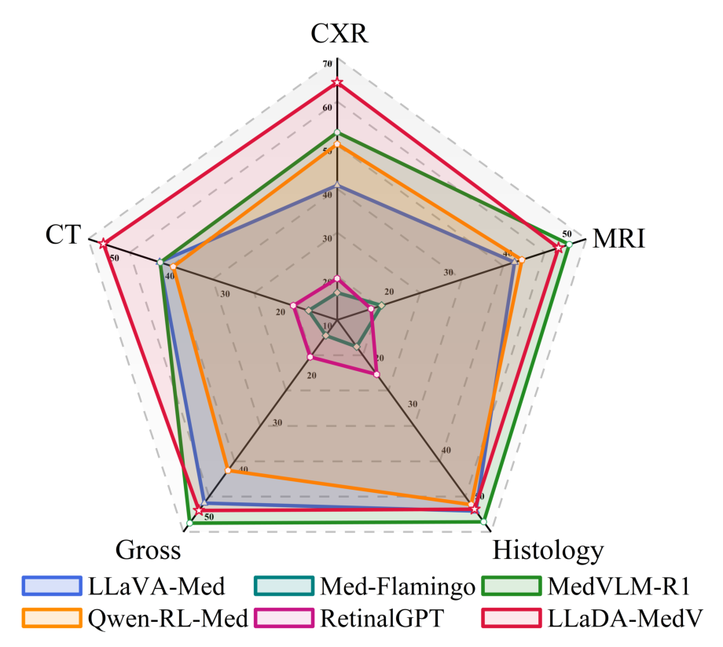

LLaDA-MedV 深读：把医学 VLM 从“自回归早停”换成“掩码扩散填空”，长答案为何更可控？
导读。LLaDA-MedV 真正要回答的问题，不是“能不能把扩散语言模型搬进医学”，而是：医学问答常常“多说一句才有用”——不仅要说“这是高密度影”，还要说可能病因、常见类型、是否建议进一步检查；可自回归模型（ARM）靠预测 EOS 来停，长度是它自己“涌现”出来的、外部很难强加。掩码扩散（masked diffusion）反过来，从一张固定长度的全 <mask> 画布出发、迭代填空——长度在采样前就被钉死。那么这种“填空式”生成，能不能既天然给出长度可控、又在医学语义上真正立得住？这就是首个生物医学掩码扩散 VLM 的立题。
{kind=link}

1. 核心问题：医学回答要“长而准”，自回归的早停是不是天生不利？
生物医学 VLM 至今几乎被自回归模型（ARM，GPT 式逐 token 生成）垄断：LLaVA-Med、BiomedGPT、MedVLM-R1 都是 ARM。而在通用域，掩码扩散模型（MDM）如 LLaDA 已经把规模做到 8B、与 LLaMA3 同台竞技。可一旦想把 MDM 搬进医学，真正的难点是领域鸿沟：医学图像（胸片、H&E 病理、CT）的低层统计与语义本体，与自然图像差距极大。
问：那把 ARM 的 max token 调大、或在 system prompt 里写“至少答 200 字”，不就能让它多说吗？
引导：长度对 ARM 是“涌现量”——它由模型何时预测出 EOS 决定，外部只能软约束。
答：论文实测给了反例。LLaVA-Med 默认平均每答 36.3 词；即便加上“请至少回答 200 字”的系统提示，也只爬到 ≈40.9 词（表 D 的 LLaVA-Med200），几乎纹丝不动。ARM 一旦提前采到 EOS 就收尾，长度无法被可靠地“强加”。而医学场景恰恰需要把话说全——见下面图 2 的对照。
Takeaway：核心问题不是“扩散能不能做医学”，而是“固定长度画布 + 迭代填空”的生成范式，能否同时拿下长度可控与医学语义对齐这两件 ARM 做得别扭的事。
2. 贡献拆解：作者明确提出了什么？
作者明确提出的贡献：(a) LLaDA-MedV——首个基于掩码扩散建模、面向生物医学图像理解的视觉-语言模型，通过 visual instruction tuning 把视觉接进 LLaDA-8B；(b) 一套与 ARM 对手的系统实证对比，覆盖开放式医学对话与三个 VQA 基准，显示其回答更长、信息更全、长度更可控；(c) 对训练与推理行为的深入分析，指认出影响生成质量的几个设计因子——初始化权重、数据特定微调、采样步数 $Z$ 与重复之间的相互作用。
读数提醒：这里的“%”其实是“评分点之差”
摘要说“相对 LLaVA-Med 提升 7.855%、相对 LLaDA-V 提升 1.867%”，正文 5.2 又说“相对 LLaVA-Med、MedVLM-R1 提升 7.855% 和 2.45%”。对照表 1 的 Overall 列：Ours 52.605、LLaVA-Med 44.750、LLaDA-V 50.738、MedVLM-R1 50.154——可见 52.605−44.750=7.855、52.605−50.738=1.867、52.605−50.154=2.451。所以这些“%”是“相对 GPT-4 评分”这一指标上的绝对分差，不是相对百分比增益。本文按其口径转述，但请读者按“分差”理解，避免被“%”放大想象。
读者能进一步推断的是：这篇的真正价值不在“刷了 SOTA”，而在它把“为什么 ARM 在医学长答上别扭、而扩散填空天然不别扭”这条因果讲清楚了——这是范式层面的论据，下面第 5–6 节会从机制把它钉死。
3. 数据与配置：三阶段各喂什么
骨干用 LLaDA-8B-Instruct 作语言主干、SigLIP2 作视觉塔、一个两层 GELU MLP 作投影器；全部训练在 4×NVIDIA A100 80GB 上完成。三阶段数据：
- Stage 1（语义对齐）：60 万 image–text 对齐对，只训投影器。
- Stage 2（端到端视觉指令微调）：6 万条多轮 inline-mention 对话（因其稳定表现被选中）。
- Stage 3（数据集特定微调）：VQA-RAD、SLAKE、PathVQA 的官方训练集，单轮问答格式。
评测方面，开放式对话用 Biomedical Visual Chatbot benchmark：给定真实图注与问题，让 LLM 裁判（这里用 GPT-4.1 mini，因原 GPT-4-0314 已不可用，故所有基线全部重测以保公平）把模型回答与固定的 GPT-4 参考答案比较，按 helpfulness/relevance/accuracy/detail 打 1–10，再按问题类型与模态（CXR/MRI/Histology/Gross/CT，共 193 题）汇总成相对 GPT-4 的分数。
4. Pipeline：冻结谁、训练谁，三步走
三阶段的“冻结/解冻”安排，本身就是动机驱动的：
- Stage 1 语义对齐：冻结视觉塔 + 冻结语言主干，只微调轻量 MLP 投影器——先把视觉特征投影进语言嵌入空间、与医学概念对齐，不动两个大模型，避免一上来就破坏预训练先验。
- Stage 2 视觉指令微调：解冻语言主干 + 投影器，视觉塔仍冻结——让主干学会“看图说话”。注意与 LLaDA-V [56] 不同，这里始终冻结视觉塔。
- Stage 3 数据特定微调：在三个 VQA 训练集上继续单轮微调，视觉塔仍冻，给闭合式/开放式医学问答提供自由格式答案能力。
问：为什么不直接拿通用域已训好的 LLaDA-V 权重来初始化，省掉对齐阶段？
答：作者试过，结论是反而退化——用 [56] 的权重初始化“削弱了模型解读医学图像的能力，并导致重复输出”。所以他们刻意不采用 LLaVA-Med 式的初始化策略。这条“负结果”后面第 6 节会用消融（表 E）量化，并从领域鸿沟给出机制解释。
Takeaway：三阶段的本质是“先对齐、再看图、最后专科化”，每一步都用冻结策略守住上一步的成果。
5. 方法：从吸收态前向到“填空式”反向，长度可控是怎么来的
5.1 前向：把 token 逐步换成吸收态 <mask>
掩码扩散在离散 token 上定义一个前向–反向过程。前向里引入特殊 token <mask> := M 作为吸收态：时间 $t$ 越大，每个 token 要么保持不变、要么以概率 $t$ 跳到 $M$（一旦进 $M$ 就不再出来）。逐 token 独立：
公式读法
$x_0$ 是干净序列、$x_t$ 是被掩到 $t$ 程度的序列，$L$ 是序列长度。把 $t$ 想成“噪声强度”：$t$ 从 0 升到 1，画布上 $M$ 的比例线性升高，直到全掩。关键：这里 $L$ 是给定的——前向从不改变序列长度，它只改变“有多少格被遮住”。这一点是后面“长度可控”的种子。
5.2 反向：从全掩画布迭代重建
反向过程要从全掩序列恢复 $x_0$。对 $0\le s<t\le 1$ 的一步反向转移：保留已揭开的 token，按比例 $s/t$ 继续遮住一部分、其余 $(1-s/t)$ 从模型预测的干净数据分布里采样回来。用一个双向注意力的 mask predictor $p_\theta(\cdot\mid x_t)$ 来预测被遮位置的干净 token——它对所有 $x_t^i=M$ 的位置满足 $q_{0\mid t}(x_0^i\mid x_t)=p_\theta(x_0^i\mid x_t)$。训练目标是只在被掩位置上的交叉熵：
5.3 接上视觉与提示：条件化目标
VLM 化只需把目标“条件”在用户提示 $u_0$ 与视觉特征 $X_v$ 上。给定训练三元组 $(X_v,u_0,r_0)$——图像、用户问句、真值回答，只对回答 $r_0$ 做掩码与重建：
公式读法
$r_t$ 是真值回答 $r_0$ 经前向掩码后的版本，$L_{r_0}$ 是回答长度。直觉：训练就是教 mask predictor $p_\theta$——在给定问句与图像、且回答画布已知长度 $L_{r_0}$、任意掩码率下，补全被遮住的答句 token。注意它从未学习“何时该停”，因为损失里根本没有“预测 EOS / 决定长度”这一项。$p_\theta$ 用双向注意力的 Transformer 实现——这正是它能同时看左右文、一次性并行预测多个被遮位的根。
问：那“掩码扩散给出 ARM 没有的显式长度控制”，到底从哪冒出来的？给我两条独立的论证。
路径 A（自上而下，看生成过程）：ARM 把“序列长度”当成一个需要模型自己决定何时停的随机变量——它逐 token 生成、靠采到 EOS 来终止，长度是涌现的，外部只能软约束（实测 36→40 词，几乎无效）。MDM 反过来：先铺一张长度 $L$ 的全 $M$ 画布，反向过程只是把这 $L$ 个位置逐步填实——长度在采样开始前就被钉死了。所以在 MDM 里，“控制长度”不是一种需要习得的能力，而是建模方式的定义。
路径 B（自下而上，看训练目标）：盯式 3——损失只对 $r_t^j=M$ 的位置算交叉熵，且训练时回答长度 $L_{r_0}$ 已知、$t\sim U[0,1]$ 决定掩多少。模型学到的能力是“给定长度画布、在任意掩码率下补全”，没有任何一项在学“何时输出终止符”。于是推理期你换一个 $L$，它照样把 $L$ 个位置填满——没有 EOS 早停的机制可言。两条路径殊途同归：长度可控源于“固定画布 + 仅重建被掩位”这一对建模选择。
Takeaway：ARM 的长度是“涌现且软约束”，MDM 的长度是“输入且硬设定”。医学长答需要后者。
6. 训练期关键因子：为什么通用域初始化反而更差？
表 E 把训练管线拆开做对照：LLaDA-MedV*（不用 LLaDA-V 初始化，只做对齐+SFT，即主实验配置）对阵两个用 LLaDA-V 初始化的变体——V1（LLaDA-V 初始化、仅 SFT、无对齐）与 V2（LLaDA-V 初始化 + 对齐 + SFT）。
| 模型 | 初始化 | 对齐 Stage 1 | OE Overall ↑ |
|---|---|---|---|
| LLaVA-Med*（ARM 参考） | — | — | 44.750 |
| LLaDA-MedV*（本文主配置） | 不用 LLaDA-V | 有 | 52.605 |
| LLaDA-MedVV2 | LLaDA-V | 有 | 31.056 |
| LLaDA-MedVV1 | LLaDA-V | 无 | 31.123 |
问：通用域 LLaDA-V 见多识广，拿它热启动按理该更好，为什么从 52.605 掉到 31？
答：用领域鸿沟解释最自洽。LLaDA-V 在通用图像/视频理解上训练，其视觉-语言联合表征对齐的是自然图像的语义流形；而 CXR/H&E/CT 的低层统计与语义本体与自然图像差很远。用它初始化，等于把参数拽进一个“对自然图像是好盆地、对医学却是系统性错位”的区域，后续 SFT 很难逃出来——而且更易诱发重复（图 5 的 Q4/Q5 正出自 V1/V2）。两条独立证据一致：消融数字（31 vs 52.6）+ 作者的直接观察（“从 [56] 权重初始化削弱了医学图像解读、导致重复”）。对齐与否（V1 vs V2，31.123 vs 31.056）几乎无差，说明瓶颈在错位的初始化盆地，而非对齐阶段本身。
Takeaway：“更强的通用先验”不等于“更好的医学起点”；domain-appropriate 初始化是把扩散 VLM 调进医学的前提，而不是锦上添花。
7. 实验：开放式对话领先，闭合式 VQA 夺冠，可这代价是什么？
判断：三张表给出互补证据。开放式对话（表 A）几乎全面领先；下游 VQA（表 B）闭合式拿 SOTA、开放式却落后；长度/时延（表 C）量化了“更长更全”的收益与“更慢”的代价。先看赢在哪，再看输在哪。
| 模型 | Conversation(143) | Description(50) | CXR(37) | MRI(38) | Histology(44) | Gross(34) | CT(40) | Overall(193) |
|---|---|---|---|---|---|---|---|---|
| LLaMA | 27.850 | 27.750 | 33.505 | 23.841 | 24.684 | 31.764 | 26.458 | 27.824 |
| LLaVA | 43.509 | 29.671 | 45.935 | 41.761 | 42.726 | 33.905 | 33.400 | 34.653 |
| LLaVA-Med | 51.750 | 24.730 | 40.819 | 39.928 | 51.452 | 48.880 | 42.083 | 44.750 |
| Med-Flamingo | 16.339 | 13.702 | 16.238 | 17.502 | 15.823 | 13.311 | 15.174 | 15.656 |
| MedVLM-R1 | 52.774 | 42.663 | 52.944 | 49.159 | 53.801 | 53.122 | 41.984 | 50.154 |
| Qwen-RL-Med | 46.408 | 40.016 | 50.225 | 41.181 | 50.081 | 41.929 | 39.618 | 44.752 |
| Qwen-VL | 51.546 | 40.143 | 58.929 | 43.186 | 51.344 | 47.106 | 42.401 | 48.592 |
| RetinalGPT | 20.535 | 13.349 | 19.477 | 15.722 | 21.839 | 17.875 | 17.932 | 18.673 |
| LLaDA-V | 53.574 | 42.627 | 57.545 | 38.445 | 64.191 | 49.055 | 42.753 | 50.738 |
| LLaDA-MedV（本文） | 54.141 | 48.214 | 64.352 | 47.348 | 51.073 | 50.432 | 50.268 | 52.605 |
读表要诚实：LLaDA-MedV 的 Overall 52.605 居首，在 Conversation、Description、CXR、CT 四项最优；但在 Histology 上 51.073 明显逊于 LLaDA-V 的 64.191、在 MRI 上也非最优。这与图 1 雷达完全对得上——它的强项在影像类（CXR/CT），在病理染色（Histology）上通用域 LLaDA-V 的先验反而更有用。
| 模型 | VQA-RAD | SLAKE | PathVQA | |||
|---|---|---|---|---|---|---|
| Open | Closed | Open | Closed | Open | Closed | |
| LLaVA | 50.00 | 65.07 | 78.18 | 63.22 | 7.74 | 63.20 |
| LLaVA-Med (from LLaVA) | 61.52 | 84.19 | 83.08 | 85.34 | 37.95 | 91.21 |
| VL Encoder-Decoder | 71.49 | 82.47 | - | - | 71.49 | 85.61 |
| Q2ATransformer | 79.19 | 82.47 | - | - | 54.85 | 88.85 |
| Prefix T. Medical LM | - | - | 84.30 | 82.01 | 40.00 | 87.00 |
| PubMedCLIP | 60.10 | 80.00 | 78.40 | 82.50 | - | - |
| BiomedCLIP | 67.60 | 79.80 | 82.05 | 89.70 | - | - |
| M2I2 | 66.50 | 83.50 | 74.70 | 91.10 | 36.30 | 88.00 |
| LLaDA-MedV（本文） | 45.60 | 84.93 | 68.85 | 92.31 | 31.96 | 95.15 |
从表 B 看，LLaDA-MedV 的“分裂人格”很清楚：闭合式三连冠（84.93 / 92.31 / 95.15，全列最优），开放式却垫底梯队（VQA-RAD Open 仅 45.60，远低于 LLaVA-Med 的 61.52）。作者给的解释很关键也很诚实：开放式 VQA 在以往工作里常被当成“在固定候选答案集上做分类”，而 LLaDA 因缺乏 post-training（无 RL、无人类偏好对齐），不擅长把答案约束进这种 rigid 格式，倾向于给开放式长答——于是 recall 吃亏。这不是“看不懂”，而是“不肯按模板答”。
| 模型 / 设置 | T/Q (s) | W/Q (词) | T/W (s) | $Z$ | Overall ↑ |
|---|---|---|---|---|---|
| LLaVA-Med | 1.317 | 36.332 | 0.036 | — | 44.750 |
| LLaVA-Med200 | 1.392 | 40.922 | 0.034 | — | 44.582 |
| LLaDA-MedV | 38.382 | 166.585 | 0.230 | 256 | 52.605 |
| LLaDA-MedV | 30.874 | 170.399 | 0.181 | 128 | 44.276 |
| LLaDA-MedV | 21.234 | 172.839 | 0.123 | 64 | 28.523 |
| LLaDA-MedV | 13.945 | 182.596 | 0.076 | 32 | 18.581 |
| LLaDA-MedV | 8.595 | 192.090 | 0.045 | 16 | 13.525 |
表 C 同时讲了好消息与坏消息。好消息：LLaDA-MedV 平均答 166 词，是 LLaVA-Med（36 词）的 4.6 倍，且加 system prompt 也撬不动 ARM——这正是第 5 节“长度可控”的实测落地。坏消息：它慢，每词 0.230 s（ARM 0.036 s，约 6 倍）；而且降 $Z$ 提速会让质量断崖式下跌——$Z$ 从 256 降到 16，T/W 快 5 倍，但 Overall 从 52.605 崩到 13.525，同时 W/Q 不降反升（166→192），多出来的词大多是重复占位。下一节把这个 $Z$–重复的因果讲透。
问：开放式对话的高分，会不会只是“答得长”骗过了 GPT 裁判？
答：作者对此设了控制——所有模型都被要求产出固定长度（$L{=}256$；对 ARM 用 max token 256 强制）。在同一长度预算下，ARM 因 EOS 早停常常答不满、信息稀薄，而 LLaDA-MedV 的掩码预测天然填满并塞进上下文（病因、类型、建议）。所以高分来自“同长度下信息更密”，而非“单纯更长”。当然，GPT-as-judge 本身非完美评估器，这点作者也承认（见局限）。
Takeaway：赢在“同长度信息更密 + 闭合式准”，输在“开放式 recall + 速度”——这是一组清晰、可解释的取舍，而非全面碾压。
8. 消融：推理期 L、B、Z 各自怎么影响质量？
除训练期初始化（第 6 节表 E）外，推理期的三个旋钮被逐一扫过：生成长度 $L$、block 长度 $B$、采样步数 $Z$。半自回归生成把长度 $L$ 切成 $L/B$ 个 block，从左到右、每 block 做 $Z\cdot B/L$ 步；并用 low-confidence remasking（MaskGIT 式，只重掩置信度最低的 token）。
| 组 | $L$ | $B$ | $Z$ | $Z\cdot B/L$ | Overall ↑ |
|---|---|---|---|---|---|
| A：变 $L$ | 32 | 32 | 32 | 32 | 37.057 |
| 64 | 32 | 64 | 32 | 39.135 | |
| 128 | 32 | 128 | 32 | 33.222 | |
| 256 | 32 | 256 | 32 | 51.215 | |
| B：变 $Z$ | 256 | 256 | 32 | 32 | 20.165 |
| 256 | 256 | 64 | 64 | 31.774 | |
| 256 | 256 | 128 | 128 | 44.020 | |
| 256 | 256 | 256 | 256 | 51.470 | |
| C：变 $B$ | 256 | 32 | 256 | 32 | 51.215 |
| 256 | 64 | 256 | 64 | 52.605 | |
| 256 | 128 | 256 | 128 | 51.641 | |
| 256 | 256 | 256 | 256 | 51.470 |
组 A（变 $L$）：分数随 $L$ 起伏（37→39→33→51），不像 LLaDA 原文报告的“对长度敏感”那样单调。作者强调这是在“所有模型固定同长度”的受控评测下得到的，掩码预测在同样长度约束下更易产出完整、信息密的回答。组 B（变 $Z$）最干净：$L,B$ 固定，$Z$ 从 32 升到 256，分数从 20.165 单调升到 51.470——采样步数就是质量的硬通货。组 C（变 $B$）：增大 $B$（从而增大每 block 步数 $Z\cdot B/L$）并不单调更好，$B{=}64$（52.605）反而优于 $B{=}256$（51.470），说明半自回归的 block 配置需要折中。
问：为什么 $Z$ 不足会让模型狂吐“the the the”？给我两条独立解释。
路径 A（去噪/信息论，论文原话）：反向是一步步去噪，总步数 $Z$ 决定每步要承担多少“去噪量”。$Z$ 小 ⇒ 每步要去的噪声多 ⇒ 单步近似误差大、噪声被注入反向轨迹（论文：“fewer steps introduce more noise into the reverse generative process”）。
路径 B（纠错动力学）：low-confidence remasking 是一个迭代修复回路，修复轮数 ∝ $Z$，且硬上界 $Z\le L$。当 $L$ 大而 $Z$ 小，单位长度的精炼机会 $Z/L$ 太少——早期填错或填了高频占位词（“the”）的位置没机会被重掩纠回。更糟的是：重复 token 这种“自洽但错误”的模式，每个“the”在局部语言模型下置信度并不低，于是 remask 偏偏不选它们去修——错误被冻结、一路复制到填满 $L$。这恰好解释了为何重复在“$L$ 大、$Z$ 小”时最严重（图 5 的 Q2/Q3），也解释了表 C 里降 $Z$ 时 W/Q 不降反升的怪象。两条路径都指向同一结论：$Z$ 是质量与重复的共同闸门。
Takeaway：$Z$ 越大越好但越慢，$Z\le L$ 是硬上界——长答场景里 $L$–$Z$ 的平衡是 LLaDA-MedV 最该被工程优化的地方。
9. 局限与复现门槛：什么时候要谨慎？
| 边界 | 论文/方法信息 | 读者应如何理解 |
|---|---|---|
| token 重复 | $Z$ 小、$L$ 大时尤甚（图 5） | 核心副作用；纠错回路轮数不足，重复被冻结进输出 |
| open-form VQA 弱 | VQA-RAD Open 仅 45.60 | 缺 post-training，不擅长把答案约束进固定候选集 |
| 推理慢 | 每词 0.230 s（ARM ≈0.036 s） | 实现未优化；提速（降 $Z$）会换来质量断崖 |
| 初始化敏感 | 通用域 LLaDA-V 初始化退化到 31 | 需 domain-appropriate 初始化，迁移别想当然 |
| 评测依赖 GPT 裁判 | GPT-4.1 mini 评分、参考答案固定 | LLM-as-judge 非完美；原 GPT-4-0314 不可用故全部重测 |
| 训练成本未全披露 | 4×A100 80G；总时长/steps 论文未说明 | 无法据此精确估 GPU-hours |
关于算力
论文仅披露“4×NVIDIA A100 80GB”，总训练时长、steps/epochs、完整 LR schedule 等论文未说明。任何 GPU-hours 数字只能按论文披露数字粗略估算，不等同于实际账单。
问：这篇最容易被过度宣传成什么？
答：容易被说成“扩散模型全面超越自回归医学 VLM”。更严谨的说法是：在开放式医学对话与闭合式 VQA 上，掩码扩散 VLM 首次被证明能与最强 ARM 基线竞争甚至领先，并天然带来长度可控；但它在 open-form VQA、推理速度、token 重复上仍有明确短板，且强依赖采样步数与领域适配的初始化。它打开的是一个方向，不是一个终点。
Takeaway：强项是“长度可控 + 影像类对话 + 闭合式 VQA 夺冠”；边界是“重复、慢、open-form 弱、初始化敏感”。
结语：几点学术判断
一句话总结：LLaDA-MedV 把生物医学 VLM 的生成范式从“自回归逐 token、EOS 早停”换成“固定长度画布、掩码迭代填空”——长度因此从“涌现软约束”变成“输入硬设定”，在同等长度预算下答得更密、闭合式 VQA 夺冠；代价是 token 重复、推理偏慢与 open-form 偏弱。
- “显式长度控制”不是技巧而是定义：全 $M$ 画布在采样前就钉死了 $L$，训练目标（式 3）只学补全、不学何时停——两条独立推导都指向这一点。
- 采样步数 $Z$ 是质量与重复的共同闸门（$Z\le L$）：步数不足 ⇒ 去噪误差大 + 纠错回路轮数不够 ⇒ 重复被冻结；表 C/D 实测单调印证。
- 更强的通用先验 ≠ 更好的医学起点：通用域 LLaDA-V 初始化把分数从 52.6 拽到 31，domain-appropriate 初始化是前提而非点缀。
资料来源与图像说明
- Xuanzhao Dong, Wenhui Zhu, Xiwen Chen, Zhipeng Wang, Peijie Qiu, Shao Tang, Xin Li, Yalin Wang. LLaDA-MedV: Exploring Large Language Diffusion Models for Biomedical Image Understanding. CVPR 2026（CVF pp. 22773–22783）/ arXiv:2508.01617（Arizona State University · Clemson University 等）。代码：
github.com/LLM-VLM-GSL/LLaDA-MedV。 - 本文公式（式 1–3）、表格（表 A–F）与全部实验数字以 arXiv PDF 为准；掩码扩散前向/反向与条件掩码交叉熵的写法对照原文 §3–4。“显式长度控制”“$Z$–重复因果”的双路径论证为本文按
kexue:su方法（动机先行、假设显式、≥2 路径交叉验证）重新推导——苏剑林语料库本次检索未返回与“吸收态掩码扩散语言模型 / 长度可控”直接对应的卡片，故仅应用方法论，未作 [archives/XXXX] 归因。 - 图像说明：图 1 为本地 PNG，由
extract_figures.py从 arXiv PDF 第 1 页 caption 锚定裁切，路径assets/figures/lladamedv/。论文其余图（图 2–5）为定性回答对照与重复示例的文本面板，分辨率不适合缩略呈现，已在正文以 HTML 表格/转述方式给出更清晰的等价证据。